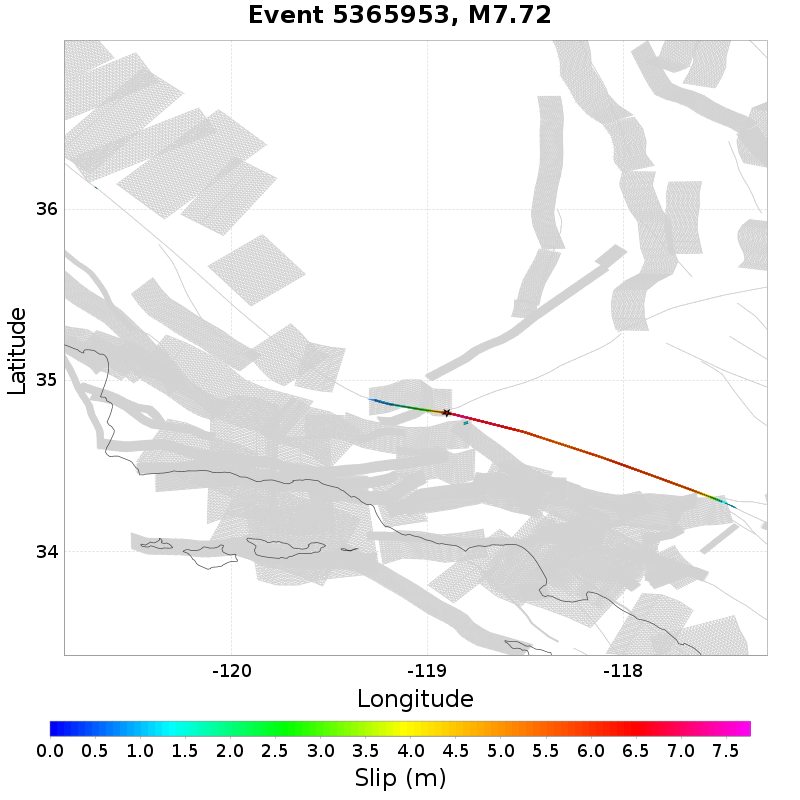

Subsections participate in a rupture if at least 20.0 % of its area ruptures
Total count of mapped UCERF3 subsections (e.g. SAF Mojave S Subsection 3), after application of minimum subsection area filter
| Event ID | Subsection Count | Plot |
|---|---|---|
| 9093914 | 108 (Subsection[s]) | |
| 9893808 | 105 (Subsection[s]) | |
| 3485081 | 102 (Subsection[s]) | |
| 7126672 | 101 (Subsection[s]) | |
| 1441573 | 93 (Subsection[s]) |  |
Total count of mapped UCERF3 subsections (e.g. SAF Mojave S), after application of minimum subsection area filter

| Event ID | Parent Section Count | Plot |
|---|---|---|
| 671658 | 15 (Section[s]) |  |
| 4159477 | 14 (Section[s]) |  |
| 2462426 | 13 (Section[s]) |  |
| 2923570 | 13 (Section[s]) |  |
| 10685166 | 13 (Section[s]) |  |
Ratio of the total rupture length (UCERF3 mapped subsection rupture) to the idealized length, defined as the straight line distance between the furthest 2 subsections
| Event ID | Mapped Length Ratio | Plot |
|---|---|---|
| 11024434 | 3.56 | |
| 9644870 | 3.48 |  |
| 7652000 | 3.42 |  |
| 4501619 | 3.42 | |
| 2467686 | 3.4 |
Total rupture length (UCERF3 mapped subsection rupture) minus the idealized length, defined as the straight line distance between the furthest 2 subsections

| Event ID | Mapped Excess Length | Plot |
|---|---|---|
| 671658 | 264.3 (km) | |
| 6651015 | 219.25 (km) |  |
| 8324165 | 219.09 (km) |  |
| 2107876 | 210.8 (km) |  |
| 11024434 | 203.75 (km) |
Moment of simulator elements not included in mapped UCERF3 subsection rupture

| Event ID | Moment Off Mapped Rupture | Plot |
|---|---|---|
| 1450493 | 1.7194901E19 (N-m) | |
| 3286706 | 1.634477E19 (N-m) |  |
| 3817386 | 1.5599315E19 (N-m) | |
| 10898611 | 1.5166895E19 (N-m) | |
| 6381066 | 1.4625452E19 (N-m) |
Event Moment Magnitude

| Event ID | Magnitude | Plot |
|---|---|---|
| 8585746 | 8.05 | |
| 8184239 | 8.05 | |
| 7551386 | 8.05 |  |
| 9093914 | 8.05 | |
| 4868735 | 8.05 |
Moment that is at least 100km from the nearest mapped subsection (after application of subsection area threshold)
5 events above threshold of 1 [N-m]
| Event ID | Moment >100km from Mapped | Plot |
|---|---|---|
| 8825881 | 5.9468145E17 (N-m) |  |
| 4033935 | 2.42374677E17 (N-m) | |
| 6271357 | 2.34263408E17 (N-m) |  |
| 3938750 | 4.3049119E16 (N-m) | |
| 5365953 | 4.073216E16 (N-m) |  |